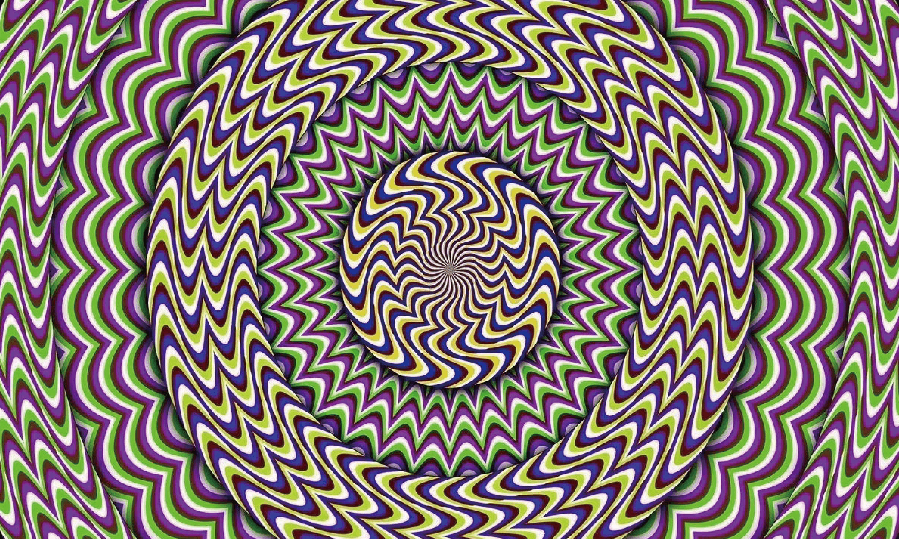
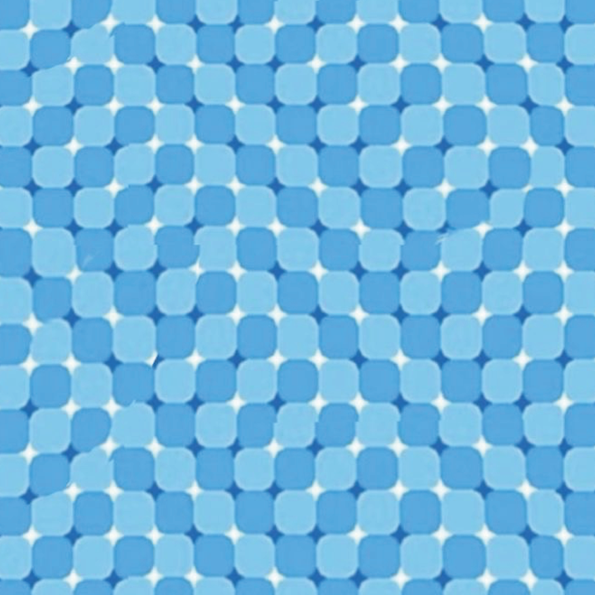
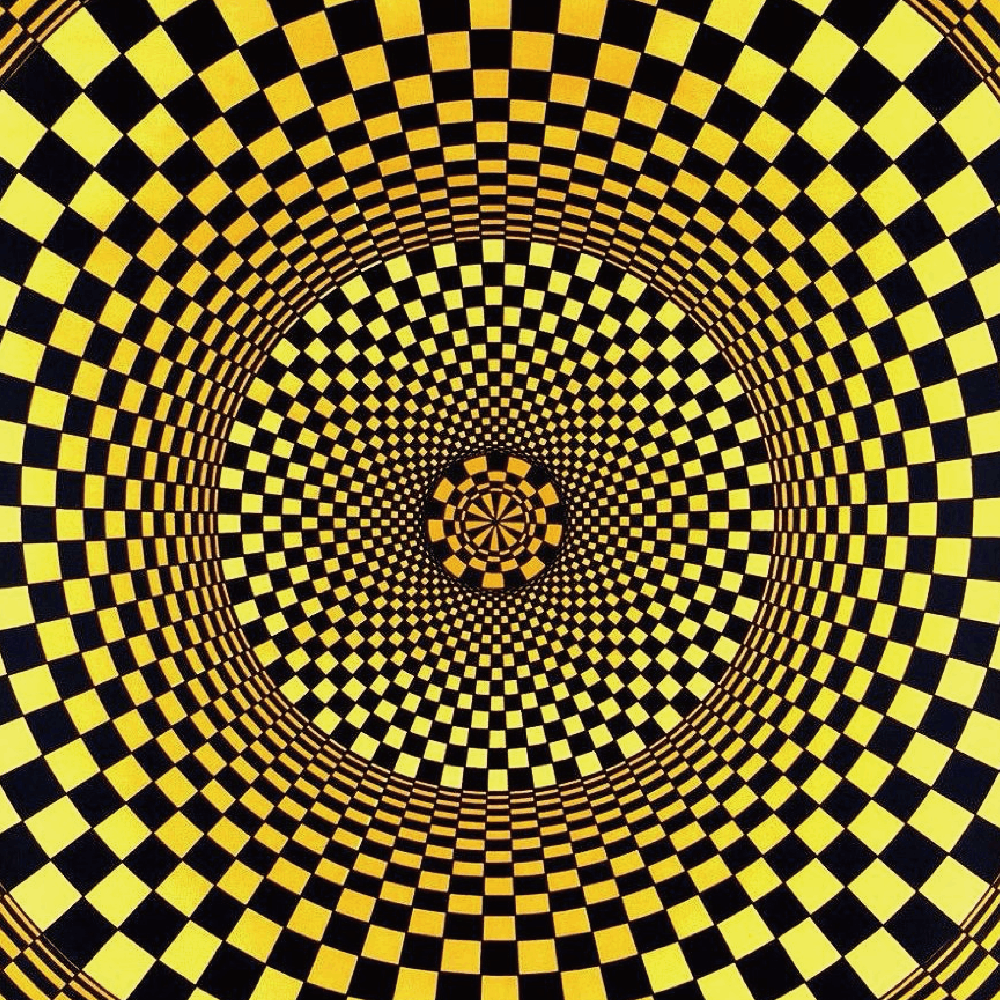
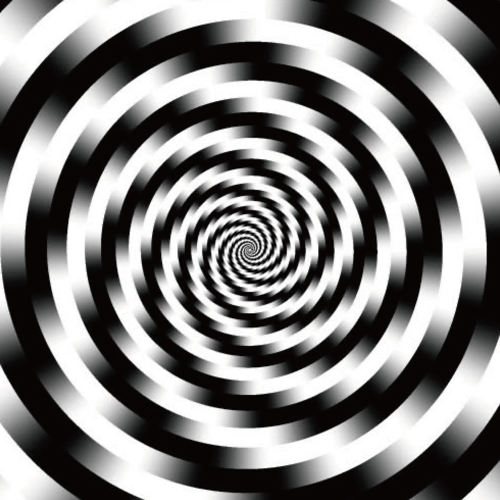
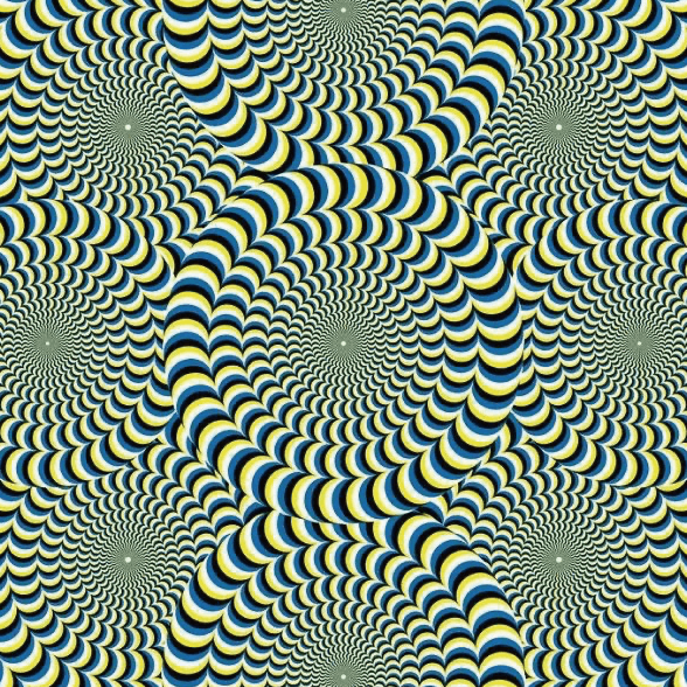
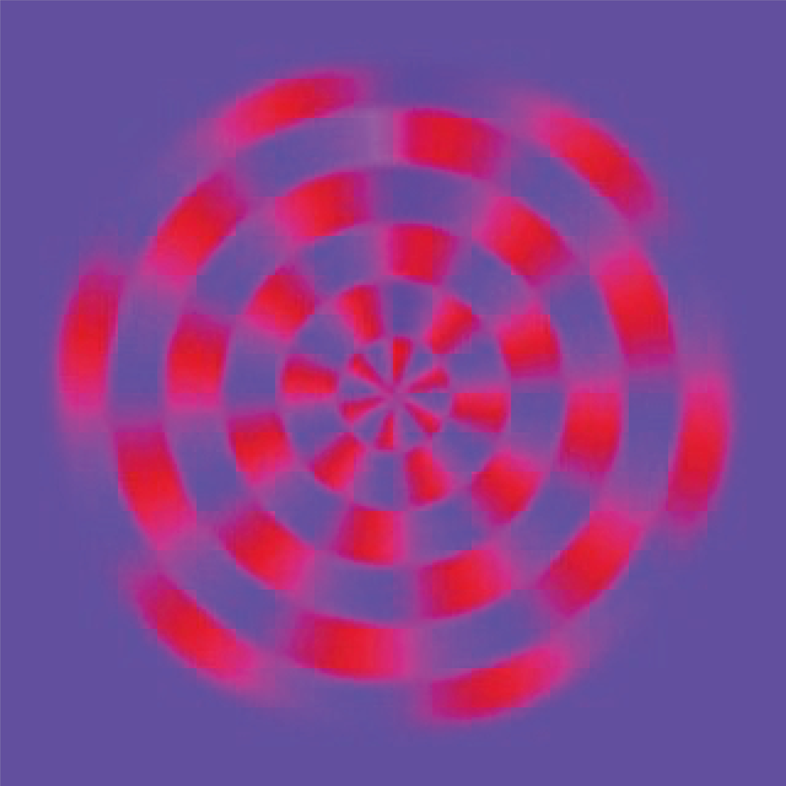
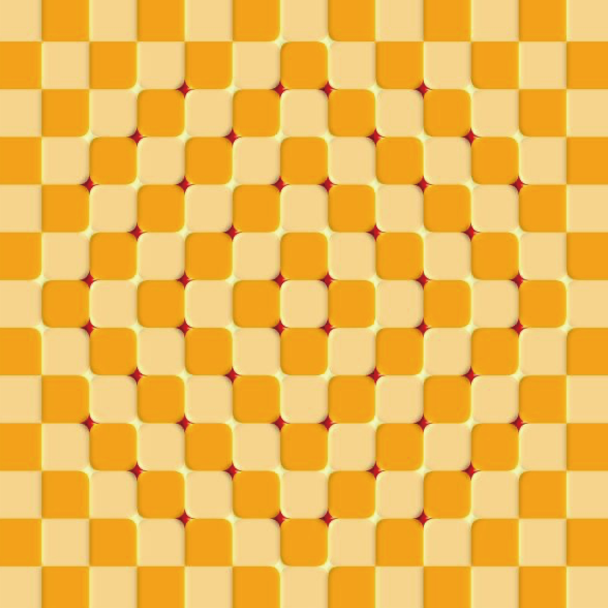
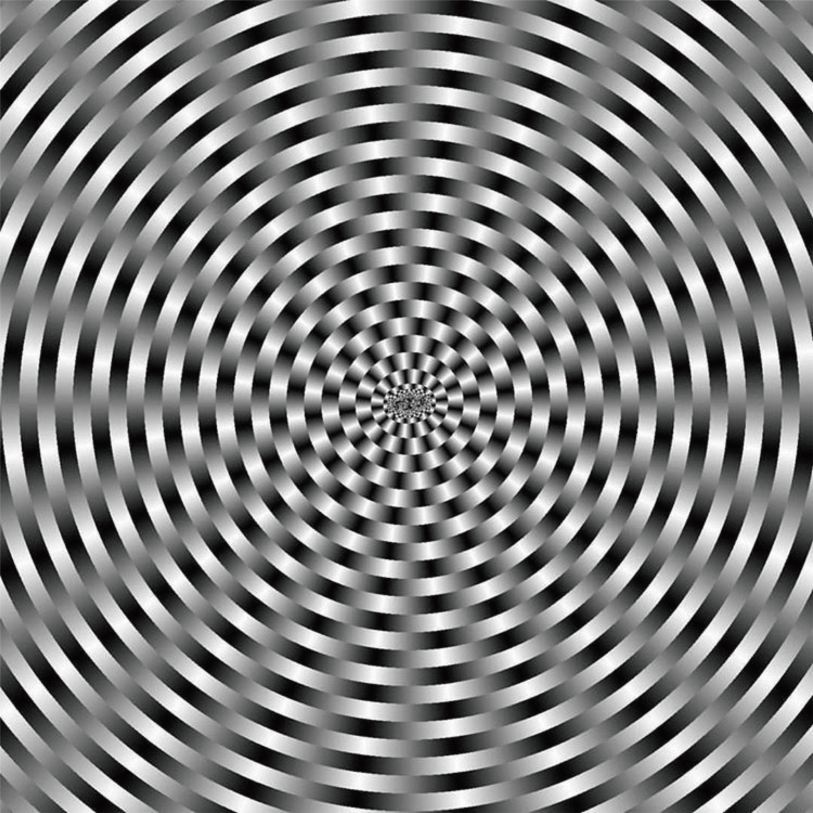
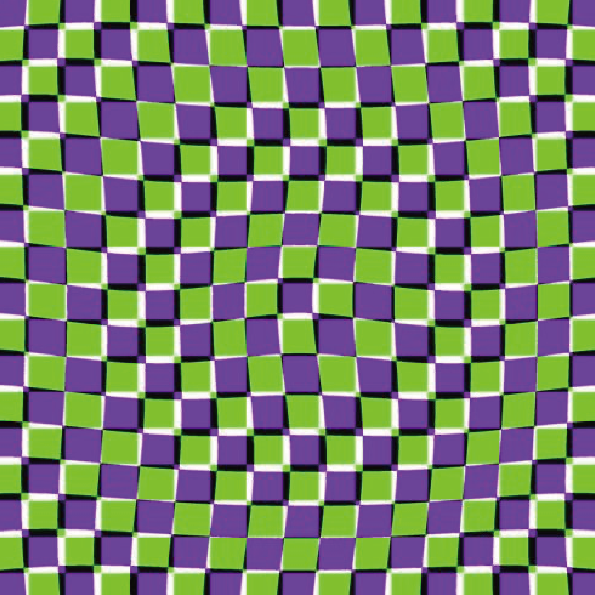
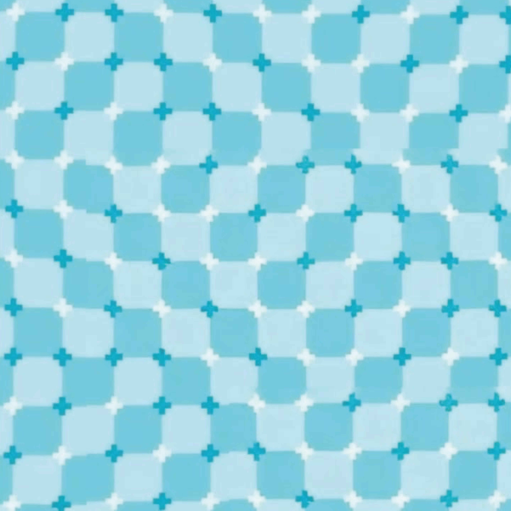

close ✕










자동 운동 효과(Autokinetic Effect)를 포함한 모션 착시는 정지된 이미지에서 움직임을 지각하는 현상이다. 뇌는 시각 정보를 처리할 때 패턴의 반복, 명도 차이, 색상 대비를 바탕으로 움직임 신호를 생성하는데, 이 과정이 실제 움직임 없이도 작동할 때 착시가 발생한다.
대표적인 원인은 안구의 미세한 떨림인 안구진탕(Microsaccade)이다. 눈은 고정된 것처럼 보여도 끊임없이 미세하게 움직이는데, 고대비 반복 패턴과 결합하면 뇌가 이 움직임을 이미지의 움직임으로 해석해버린다.
모션 착시는 1990년대 일본의 심리학자 아키요시 키타오카(Akiyoshi Kitaoka)가 체계적으로 연구하고 대중화했다. 그가 만든 "회전하는 뱀(Rotating Snakes)" 패턴은 정지 이미지임에도 강렬한 회전감을 만들어내며 전 세계적으로 유명해졌다.
흥미로운 점은 피로하거나 카페인을 섭취한 상태일수록 착시가 더 강하게 느껴진다는 것이다. 뇌의 억제 기능이 약해질수록 오작동이 더 쉽게 일어난다. 착시의 강도는 곧 뇌의 상태를 반영한다.